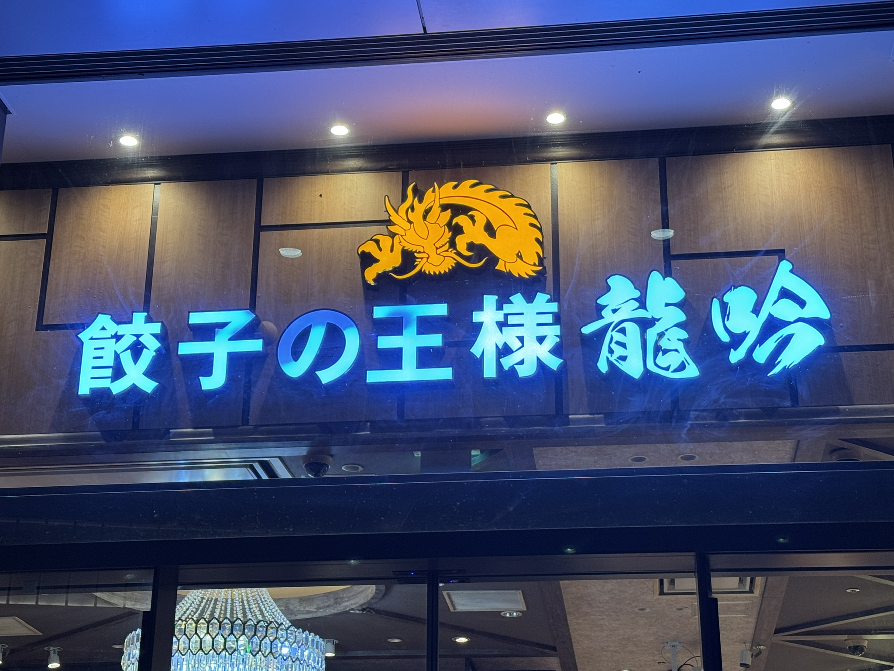
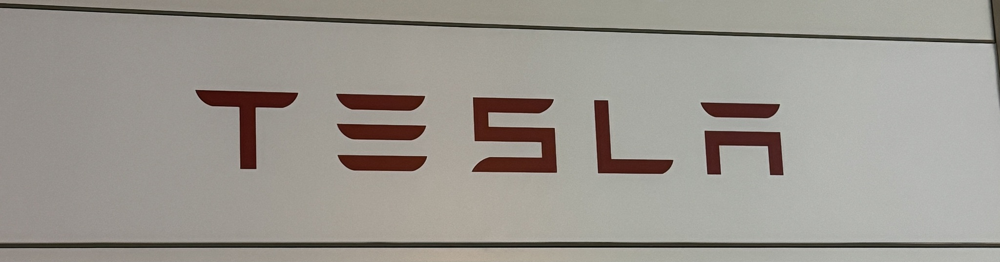
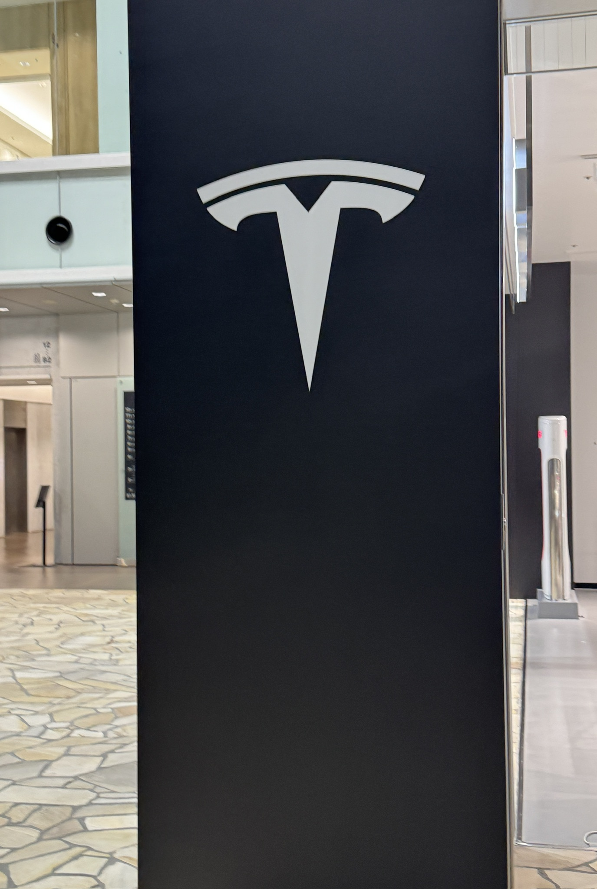

画像を表示(30%)

これは、私が10月18日にみなとみらいで撮った餃子の王様の看板の写真です。青く光った文字と黄色い竜のイラストの コントラストが強く印象に残りました。＜br> 画像を表示(30%)


これらの二つの写真も私が10月18日にみなとみらいで撮ったテスラの看板とサインの写真です。 看板はスタイリッシュでカッコいい印象を受けました。サインは、テスラのTと電動モーターの表面を表すものになっています。